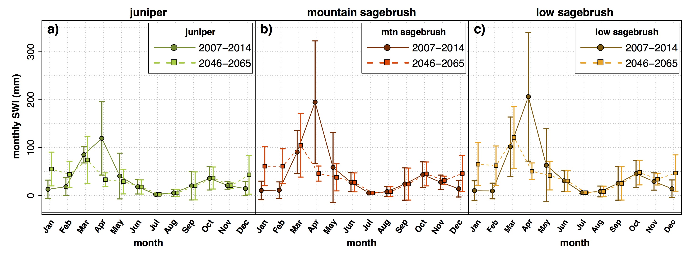

Surface Water Input (SWI)
While interception is the process where trees and other vegetation intercept incoming rain and snow, SWI is the process of rain and snow melt entering the subsurface. While in rain-dominated environments, hydrologist can just consider throughfall - since any rain that passes through the canopy (and eventually through leaf litter or sub-canopy vegetation) will enter the soil. But in snow-dominated environments like much of the western U.S., while snow can pass through the canopy, it may take weeks or months for that snow to melt. And before the snow melts, some of it can be sublimated to the atmosphere. As such, we focused on SWI since precipitation occured as rain and snow at our study site.
Measured SWI and Snow Deposition
We measured snow deposition, snow melt, and rain under juniper trees and outside juniper trees. In the figure below we plotted the total SWI or snow depth ratio - which is the SWI or snow depth under the trees divided by the SWI or snow depth in the interspace. A ratio greater than 1 means more SWI/snow depth occured under the tree, a ratio less than 1 means a greater SWI/snow depth occured in the interspace. Typically this ratio is almost always less than 1. In the figure, snow depth (D_s) is white diamonds. Interestingly we found that for some snow storms, more snow was deposited under the tree than in the interspace (i.e. for the points above the 100% D_s ratio line). Further research revealed that tree wells formed below junipers, and when a snow storm was windy, excess snow would get blown under the tree, causing more snow to be deposited below the tree than in the interspace. The circles are all SWI with the blue, grey, and red circles being rain, mixed, and snow events respectively. Interestingly, similar to snow depth, some snow and mixed events had more SWI under the tree than in the interspace. Statistical analysis revealed that the SWI ratio was greater for snow and mixed events than rain events. This means that for a snow event more water enters the soil under the tree, but for a rain event, more water enters the soil in the interspace.

Figure caption: circles are the ratio of below tree to interspace lysimeter-derived surface water input for rain (SWI_rain ratio), mixed (SWI_mixed ratio), and snow (SWI_snow ratio) vs. interspace SWI (SWI_interspace). Diamonds are the ratio of below tree to interspace snow depth (D_S ratio) vs. snow depth (D_S). For y-axis values below 100%, more SWI or D_S occurred in the interspace than below the canopy (i.e. interspace > canopy), and vic versa for y-axis values above 100%.
Simulated SWI in Current and Future Climate
We simulated SWI with the Simultaneous Heat and Water model under the current and future climate. As we would expect, SWI peaks in April when most of the snow melts in these systems. We see that SWI is much greater under low and mountain sagebrush than under juniper. We also see that the peak SWI shifts to a month earlier in the mid-21st century climate.

Figure caption: plots of (a,b,c) monthly surface water input (SWI) in juniper, mountain big sagebrush, and low sagebrush over WY 2007-2014 (current climate) and WY 2046-2065 (future climate). Darker (lighter) colors, circles (squares), and solid (dotted) lines signify current (future) climate. Points are averages for the given period, error bars denote one standard deviation.
The table summarizes the SWI amount and timing in the juniper, mountain sagebrush, and low sagebrush simulations. We see that SWI is 24% and 28% lower in juniper than in mountain and low sagebrush respectively.
| Juniper | Mtn. sage | Low sage | |
|---|---|---|---|
| SWI (mm) | 390 +/- 109 | 511 +/- 121 | 545 +/- 118 |
| SWI 50% (days) | 178 +/- 18 | 183 +/- 18 | 185 +/- 18 |
Table captions: SWI amount and timing for current climate. SWI 50% is water year day when 50% of Octobe–June SWI occurred. Numbers after ‘±’ denote standard deviation.
Information on this page is based on this publication, where you can find more detailed information about this study.